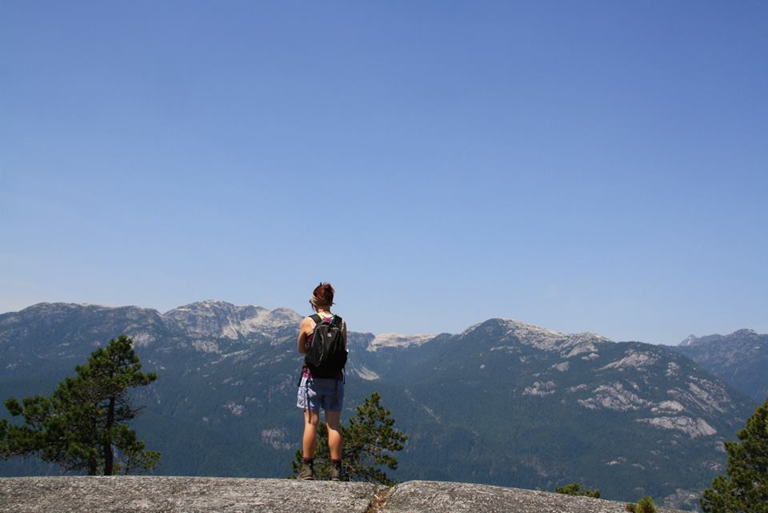

About me
I completed my PhD at The University of British Columbia in August 2017. Currently I am the Manager of Public Programs at Ocean Wise Conservation Association.
Science Outreach
I am passionate about communicating science to non-scientists and getting young people engaged and motivated about science.
Public Programs Manager at Ocean Wise
I run the adult and community education events at Ocean Wise and The Vancouver Aquarium.